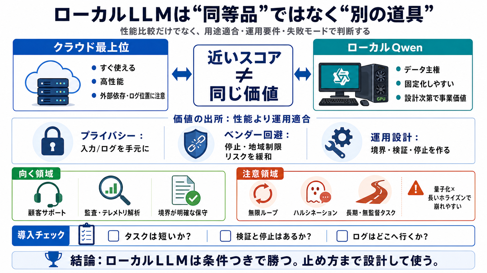

Qwen3.6 is the large language model series developed by ... - GitHub
[Skip to content](https://github.com/QwenLM/Qwen3.6#start-of-content). [Reload](https://github.com/QwenLM/Qwen3.6) to re…

[Skip to content](https://github.com/QwenLM/Qwen3.6#start-of-content). [Reload](https://github.com/QwenLM/Qwen3.6) to re…
Full benchmark results and in-depth analysis are available in the articles: KV Cache Quantization Benchmarks for Long Co…
# Qwen 3.6 Developer Guide: Benchmarks, Architecture, API Access & Self-Hosting. Alibaba's Qwen 3.6 generation brings a …
Going to Try Out Different Qwen 3.6 27b Quantizations for local usage Jarods Journey 43200 subscribers 25 likes 846 view…
In this video, I test Qwen 3.6 — the new version of one of my favorite local LLM models — to see whether it can handle r…